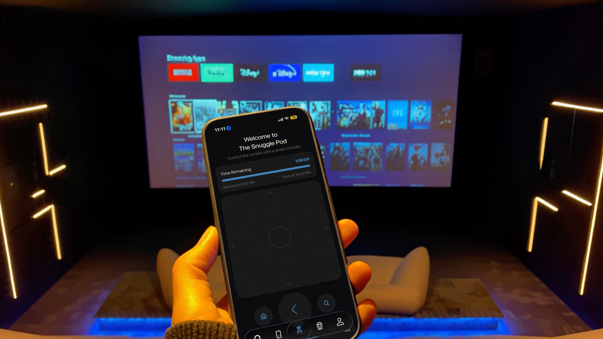
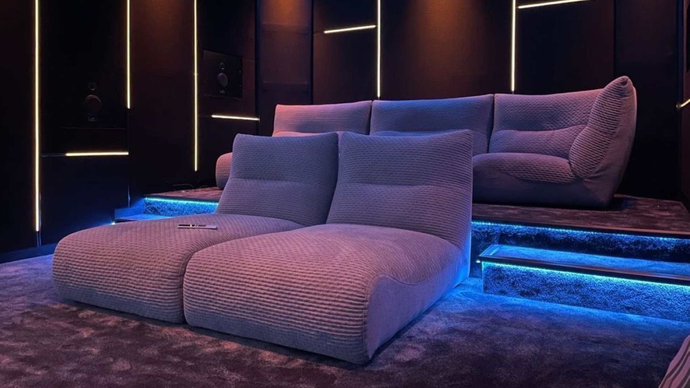
Service design · Mobile · 2025
neuk is a mobile booking experience for private screening rooms, bringing the social experience of watching together back to streaming. From finding a room to unlocking the door and controlling the screen, everything happens in one app.
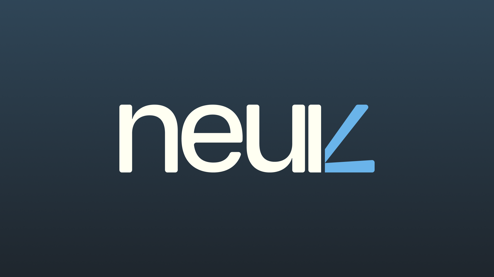
Problem
Everyone wants to watch together. Nobody has the room.
In cities like New York, apartments are small and shared, and the third spaces that could hold a group cost money and fill up fast. Friends still want to gather for the finale, the premiere, or the big game, but every place they can go gives something up.
Opportunity
How might we create a shared viewing experience that combines the comfort of home, the quality of a theater, and the social energy of going out?
Solution
A private screening room, booked and controlled from your phone.
neuk connects room discovery, hourly booking, contactless entry, and streaming controls in one mobile experience.

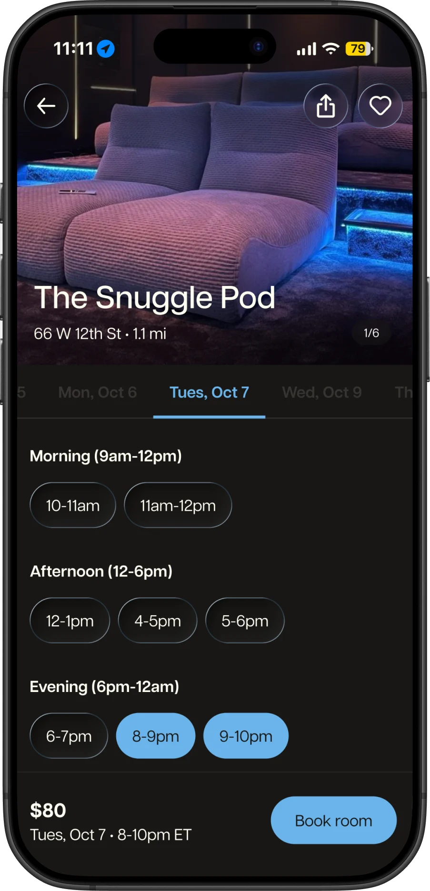


Browse
Explore available screening rooms by location, time, and group size, with additional filters to find the right fit.
Book
Compare rooms, check availability, and reserve a private space by the hour.
Check in
Access your upcoming reservation and scan your QR ticket to enter the room.
Stream
Connect your phone to the room's screen and control playback directly from the app. Streaming services are already set up and signed in, so guests don't need to use their personal accounts.
Three room sizes, priced by the hour
Groups pick a size before they pick a room. The room size filter explains each tier up front: who it fits, what it costs per hour, and the minimum booking.
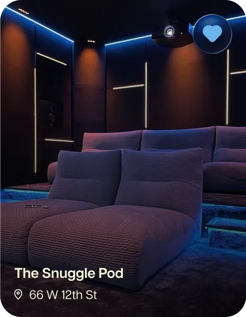
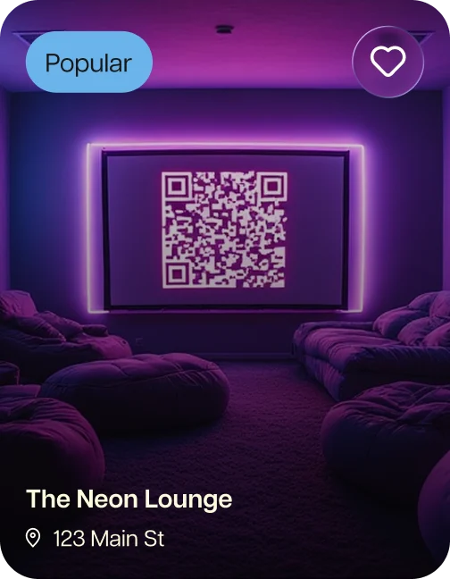
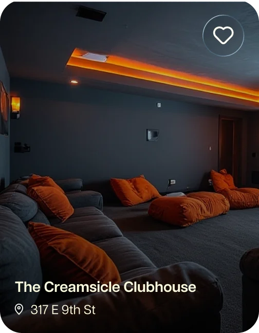
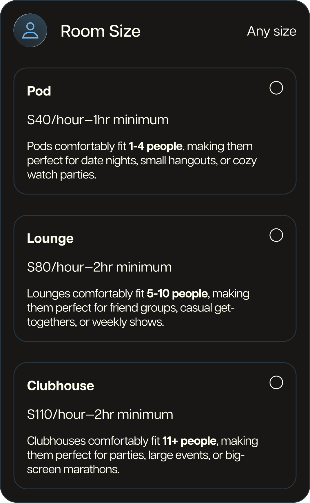
Core flows
From making plans to pressing play.
Four connected flows take users from discovering neuk to enjoying a private screening with friends.
GET STARTED
Make it easy to get started.
A quick onboarding introduces neuk and takes users straight into browsing spaces and exploring what's available.
Discover & Book
Find the right fit, then make it yours.
Search by location, time, and group size, then refine results with additional filters. Compare rooms in list or map view, explore available time slots, and book by the hour.
Check In
Make getting in as easy as showing up.
Upcoming bookings stay accessible in the app, with a reminder an hour before each reservation. On arrival, users pull up their booking and scan the QR code to enter.
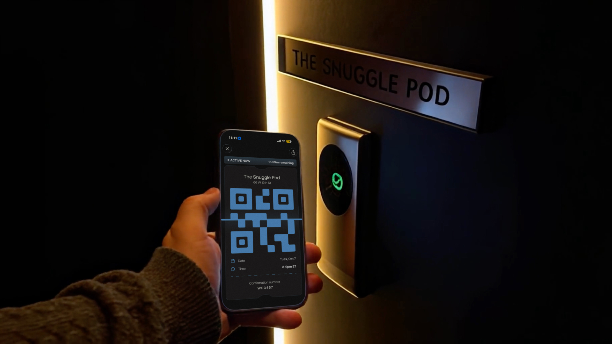
Start Watching
Scan, connect, and start watching.
Scan the QR code on the room’s screen to pair your phone and turn the app into a remote for browsing streaming services, controlling playback, and tracking time remaining. Past and upcoming bookings stay accessible in the app for future visits.

High fidelity
One connected experience, from onboarding to playback.
The final screens bring discovery, booking, room access, and streaming controls into a consistent mobile interface.


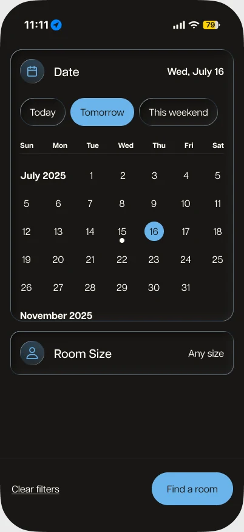

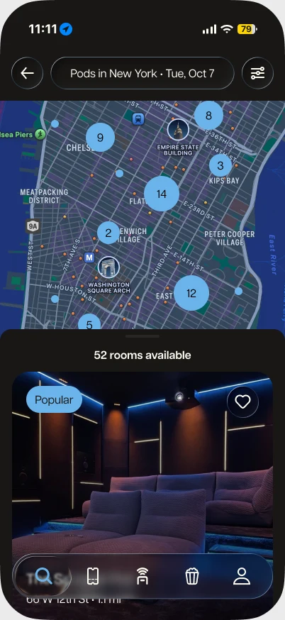
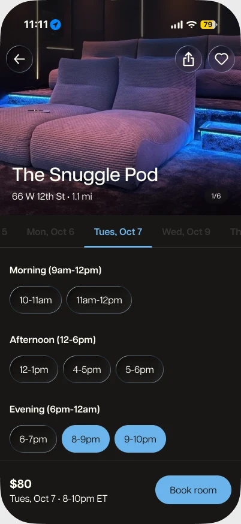
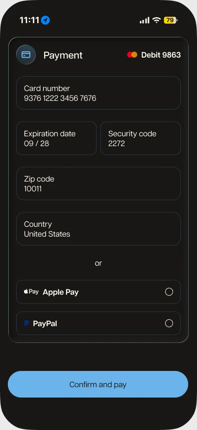


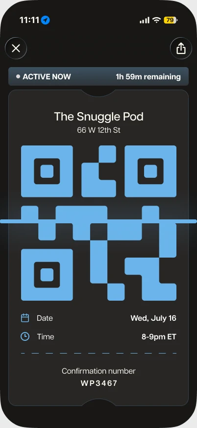
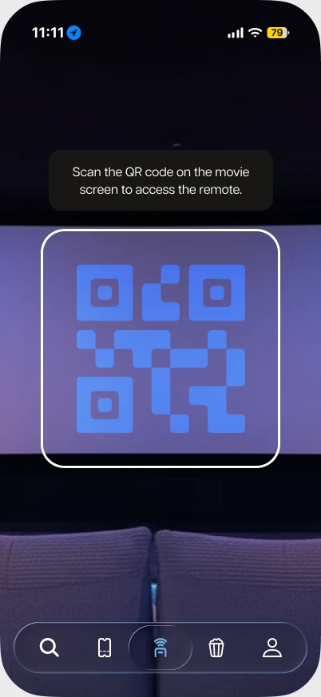

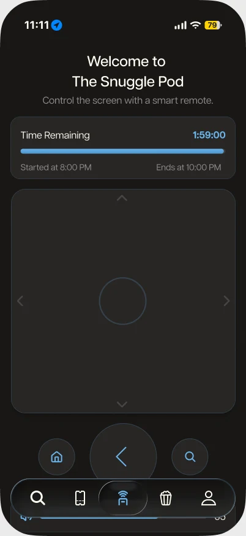


Research
People don’t go out to watch a movie. They go to be together.
I started with the market, then talked to people. A competitive analysis showed the gap between the places people already watch together. Interviews showed what keeps them from doing it more.
Competitive analysis
Every option gives something up. None has it all.
I compared movie theaters, apartments, and public spaces like bars and watch parties on what they offer and where they fall short. Theaters have the screen, apartments have the comfort and control, and bars have the energy. Nothing offered all of it in a private room.


Screener
Groups outgrow living rooms, and they’d book a room to fix it.
Before the interviews, a screener confirmed who to talk to. Six people who watch with friends every week answered, and their answers made the case for a bookable room: the groups are bigger than the space, and everyone was interested.
User interviews
Small apartments, big groups, and a group chat that never decides.
A screener found six people who watch with friends regularly. I interviewed each one about how they watch, where, and what gets in the way, then sorted the notes into an affinity map.

01
A middle ground between home and theater
Home is comfortable but cramped and a chore to host. Theaters are immersive but rigid and impersonal.
02
Planning is the pain
Finding a time, getting everyone there, and splitting the cost kill the plan before it starts.
03
The people matter more than the movie
Time with friends is the draw, and many want a plan that isn’t built around drinking.
04
Worth it when it’s split
Price worried people until it was framed per person: a private theater night for about $20 each.
System thinking
Designing the app and the physical experience as one service
I translated research findings into personas, an app structure, and a service blueprint connecting what users do on their phones with what happens inside the screening room.
User Personas
Three viewing habits, three different priorities
Each persona combines two interviewees with similar habits and needs.
System map
Organizing the experience around the full booking journey
The app is organized around the booking loop: find a room, get the ticket, pair the remote. Food and drink got its own tab in the map, but I scoped it out of the first version.
Service blueprint
Connecting every digital touchpoint to the physical service behind it
The blueprint follows a group through five stages and lines up what they do, what they see in the app and the room, what staff do behind the scenes, and the systems underneath. Food and drink lives here as a staffed service, ready for the app when it’s designed.
Iterations & testing
People wanted cozy but elevated: the energy of going out with the comfort of home.
Before designing screens, I tested the vibe. That set up three visual directions, and a low-fidelity flow showed what the screens had to fix.
Concept testing
Participants sorted rooms and food into what was and wasn’t their vibe.
Like a card sort with pictures: each participant sorted rooms, food and drink setups, and app features into my vibe, could sometimes be my vibe, and not my vibe, and left comments on what drew them in.

01
Not extremes
People gravitated to a balance of social energy and homey comfort.
02
Cozy but elevated
Warm lighting and soft seating, with a screen worth leaving home for.
03
Not a club
Neon, party-like spaces felt too distracting or impersonal for most.
Design directions
Three directions, each pushing one extreme.
Lume leaned into the quality of a theater, neuk into the comfort of home, and Streamie into the energy of going out. The final design keeps the best of the first two.
What testers liked
The polish. It felt high-tech and official, like a real screening.
Carried into the final
The dark palette, one sky-blue accent, and thin 1px lines.


What testers liked
The name, and a sense of coziness, intimacy, and personal control.
Carried into the final
The name neuk, rounded shapes, and warm cream instead of stark white.

What testers liked
The vibrancy, the nostalgia, and the playfulness.
What gave them pause
Taken too far, it could feel kid-like and gamified.
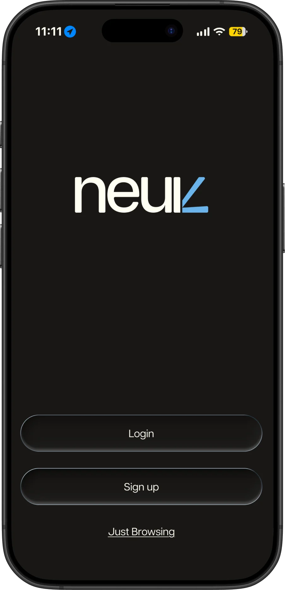
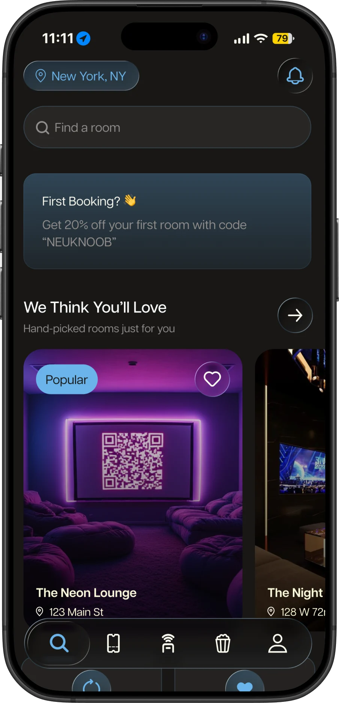
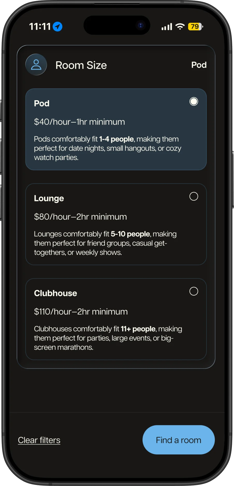
Cozy but elevated
Dark like a theater, warm like home: deep gray instead of black, cream instead of white.
One accent
Blue marks what to tap. Everything else stays quiet so the rooms lead.
Rounded, never sharp
Cards, pills, and buttons are rounded, from neuk.
Thin lines and glass
1px strokes and glass buttons from Lume keep it sleek without the neon.
Low-fidelity testing
Testers wanted to see more, be told more, and control less.
Eight testers left notes screen by screen, from room cards that were too small to confusion about what happens after booking. Drag or scroll the strip to read them.
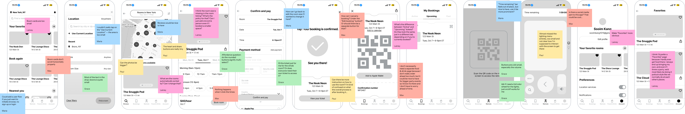
Lainey
Bigger room cards
“Room cards are too small.” Cards grew, and more of each photo shows.
Paul
Guidance after booking
“I’m confused on the process after booking it.” A reminder, the ticket, and a welcome in the room now walk the group through.
Grace
A simpler remote
“Just on/off works for me.” The full color wheel for the lights became a simple toggle.
Branding
Cinematic enough for a night out, cozy enough to feel like home.
I started by deciding what neuk is and isn’t, ran a naming sprint, and sketched the mark by hand. The system takes Lume’s dark palette, blue accent, and thin lines, and neuk’s name, rounded shapes, and warm cream.
What neuk is
Convenient, social, and cozy. It feels easy, like a party, and like home.
What neuk isn’t
Complicated, restrictive, or a big commitment.
The name
Nook, a corner that offers seclusion, plus 아늑한 (aneukhan), Korean for cozy. The k is drawn as a corner: your own nook in the city.
Next steps
Next, the parts of the night the app doesn’t cover yet.
The booking loop works end to end. Three questions are still open, and the service would need a way to launch.
How might we…
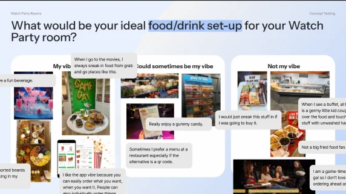
…imagine the food and drink ordering page?
It’s mapped in the service blueprint, with a kitchen and a runner behind it, and concept testing showed what people want. The menu, cart, and order status screens come next.
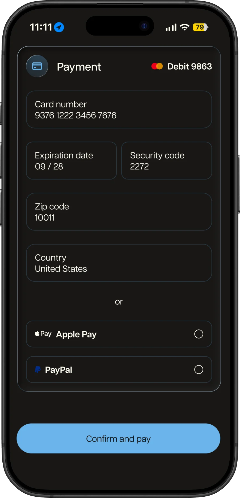
…imagine a Splitwise-style way for friends to pay, right in the app?
Starting from today’s payment screen, so one friend doesn’t front the whole room and chase everyone for their share.
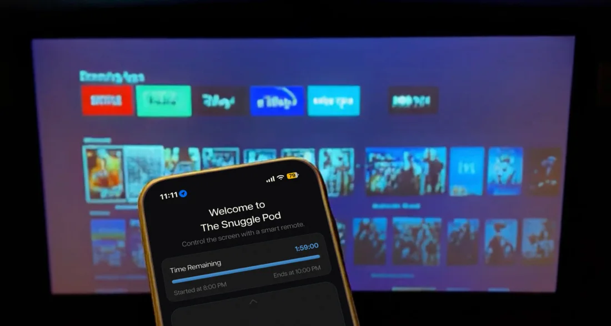
…imagine the interface of the movie screens, with every streaming service in one place?
What the group sees on the big screen: one home for every service, what to watch next, and how much time is left, readable from across the room.
If neuk launched, it would start in rooms that already exist
01
Rent before building
Pilot in karaoke rooms and older auditoriums during off-peak hours. Add a big screen and the neuk remote, and test demand without building anything.
02
Watch for repeat groups
The signal is the same friends booking again, not first-time curiosity.
03
Then build neuk rooms
Open purpose-built pods, lounges, and clubhouses in the neighborhoods that book the most.
Reflection
What began as a way to watch turned into a way to connect.
What began as a mobile booking concept became an exercise in connecting digital interactions with physical spaces, group dynamics, and the systems required to deliver a cohesive service.
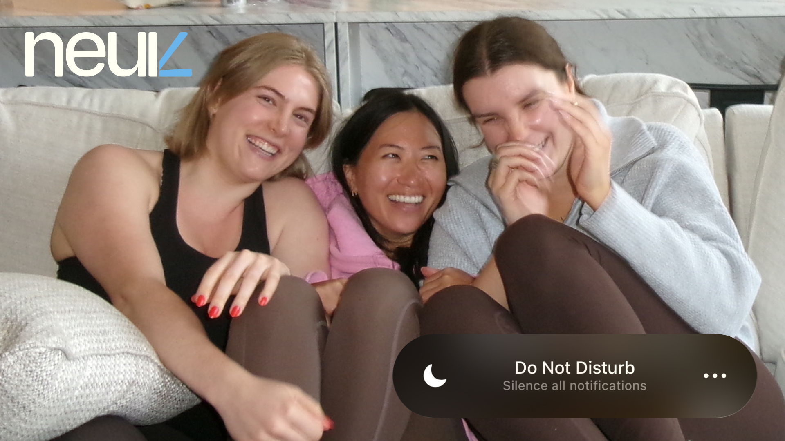
Takeaway · Designing for People
People aren't just looking for a bigger screen or a better way to watch. They're looking for a place to experience it together.
Takeaway · Service design
A seamless digital experience depends on designing what happens before, during, and beyond each interaction.